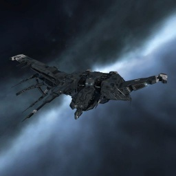

Raven

Тип корабля: Линкор
Государство/Организация: Caldari
Примерная стоимость: 310.000.000 ISK
Описание
«Рейвен» — основа военной мощи флота Государства Калдари. Благодаря множеству пусковых установок и прочнейшим силовым полям, мало кто может сравниться с ним в мощи и величии.
Характеристики
Корпус
Запас прочности корпуса: 7.040 ед.
Вместимость грузового отсека: 830 м^3
Объем отсека для дронов: 75 м^3
Пропускная способность канала телеуправления: 50 Мбит/с
Отсек спасательного фрегата: 1 ед.
Масса: 99.300.000 кг
Занимает объем: 470.000,0 м^3 (50.000,0 м^3 в разобранном виде)
Влияние инертности конструкции: 0,12x
Сопротивление корпуса ЭМ-урону: 33 %
Сопротивление корпуса термальному урону: 33 %
Сопротивление корпуса кинетическому урону: 33 %
Сопротивление корпуса фугасному урону: 33 %
Броня
Запас прочности брони: 6.380 ед.
Сопротивление брони ЭМ-урону: 50 %
Сопротивление брони термальному урону: 45 %
Сопротивление брони кинетическому урону: 25 %
Сопротивление брони фугасному урону: 10 %
Щит
Запас прочности щита: 7.700 ед.
Влияние на время регенерации щитов: 41 минут и 40 секунд
Сопротивление щита ЭМ-урону: 0 %
Сопротивление щита термальному урону: 20 %
Сопротивление щита кинетическому урону: 40 %
Сопротивление щита фугасному урону: 50 %
Сопротивление средствам РЭП
Сопротивление накопителя нейтрализирующему воздействию: 0 %
Сопротивление воздействию генератору стазис-поля: 0 %
Сопротивление воздействию помех на наводку вооружения: 0 %
Накопитель энергии
Емкость накопителя: 5.500,0 ГДж
Время востановления заряда: 19 минут и 10 секунд
Целеуказания
Максимальная дальность захвата цели: 90 км
Максимальное количество захваченных целей: 7
Радиус сигнатуры: 410 м
Разрешающая способность систем захвата цели: 111 мм
Эффективность радарной системы: -
Эффективность магнитнометрической системы: -
Эффективность гравиметрической системы: 22 ед.
Эффективность ладарной системы: -
Двигательная установка
Максимальная скорость: 113 м/с
Скорость в варп-режиме: 3,0 а.е./с.
Служба оснащения
Мощность ЦПУ: 750,0 Тф
Мощность реактора: 11.000 МВт
Калибровка: 400 ед.
Точки монтажа орудийных установок: 4
Точки монтажа пусковых установок: 6
Разъемы большой мощности: 7
Разъемы средней мощности: 7
Разъемы малой мощности: 5
Разъемы под установку тюнинг-модулей: 3